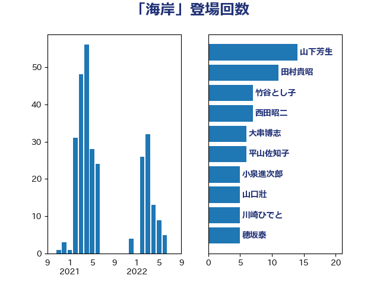

単語「海岸」

| 山下芳生 | 日本共産党 | 14 回 |
| 田村貴昭 | 日本共産党 | 11 回 |
| 竹谷とし子 | 公明党 | 7 回 |
| 西田昭二 | 自由民主党 | 7 回 |
| 大串博志 | 立憲民主党 | 6 回 |
| 平山佐知子 | 無所属 | 6 回 |
| 小泉進次郎 | 自由民主党 | 5 回 |
| 山口壯 | 自由民主党 | 5 回 |
| 川崎ひでと | 自由民主党 | 5 回 |
| 穂坂泰 | 自由民主党 | 5 回 |
| 宮内秀樹 | 自由民主党 | 4 回 |
| 赤羽一嘉 | 公明党 | 4 回 |
| 近藤和也 | 立憲民主党 | 4 回 |
| 上田英俊 | 自由民主党 | 3 回 |
| 徳永エリ | 立憲民主党 | 3 回 |
| 牧原秀樹 | 自由民主党 | 3 回 |
| 福島みずほ | 社会民主党 | 3 回 |
| 竹内真二 | 公明党 | 3 回 |
| 足立敏之 | 自由民主党 | 3 回 |
| 須藤元気 | 無所属 | 3 回 |
| 高木啓 | 自由民主党 | 3 回 |
| 大野敬太郎 | 自由民主党 | 2 回 |
| 新垣邦男 | 立憲民主党 | 2 回 |
| 浅野哲 | 国民民主党 | 2 回 |
| 片山大介 | 日本維新の会 | 2 回 |
| 田名部匡代 | 立憲民主党 | 2 回 |
| 赤嶺政賢 | 日本共産党 | 2 回 |
| 赤澤亮正 | 自由民主党 | 2 回 |
| 野上浩太郎 | 自由民主党 | 2 回 |
| 高橋千鶴子 | 日本共産党 | 2 回 |
| 高鳥修一 | 自由民主党 | 2 回 |
| 上田清司 | 国民民主党 | 1 回 |
| 中川郁子 | 自由民主党 | 1 回 |
| 井上哲士 | 日本共産党 | 1 回 |
| 吉田忠智 | 立憲民主党 | 1 回 |
| 土屋品子 | 自由民主党 | 1 回 |
| 坂本哲志 | 自由民主党 | 1 回 |
| 堀内詔子 | 自由民主党 | 1 回 |
| 塩田博昭 | 公明党 | 1 回 |
| 大口善徳 | 公明党 | 1 回 |
| 小沢雅仁 | 立憲民主党 | 1 回 |
| 山口那津男 | 公明党 | 1 回 |
| 山崎誠 | 立憲民主党 | 1 回 |
| 山本剛正 | 日本維新の会 | 1 回 |
| 山添拓 | 日本共産党 | 1 回 |
| 市村浩一郎 | 日本維新の会 | 1 回 |
| 平口洋 | 自由民主党 | 1 回 |
| 日下正喜 | 公明党 | 1 回 |
| 杉本和巳 | 日本維新の会 | 1 回 |
| 森屋隆 | 立憲民主党 | 1 回 |
| 森山浩行 | 立憲民主党 | 1 回 |
| 森田俊和 | 立憲民主党 | 1 回 |
| 横沢高徳 | 立憲民主党 | 1 回 |
| 清水貴之 | 日本維新の会 | 1 回 |
| 熊谷裕人 | 立憲民主党 | 1 回 |
| 片山さつき | 自由民主党 | 1 回 |
| 牧山ひろえ | 立憲民主党 | 1 回 |
| 猪口邦子 | 自由民主党 | 1 回 |
| 石井啓一 | 公明党 | 1 回 |
| 石原宏高 | 自由民主党 | 1 回 |
| 石川大我 | 立憲民主党 | 1 回 |
| 稲津久 | 公明党 | 1 回 |
| 紙智子 | 日本共産党 | 1 回 |
| 舟山康江 | 国民民主党 | 1 回 |
| 菅直人 | 立憲民主党 | 1 回 |
| 菅義偉 | 自由民主党 | 1 回 |
| 西銘恒三郎 | 自由民主党 | 1 回 |
| 長友慎治 | 国民民主党 | 1 回 |